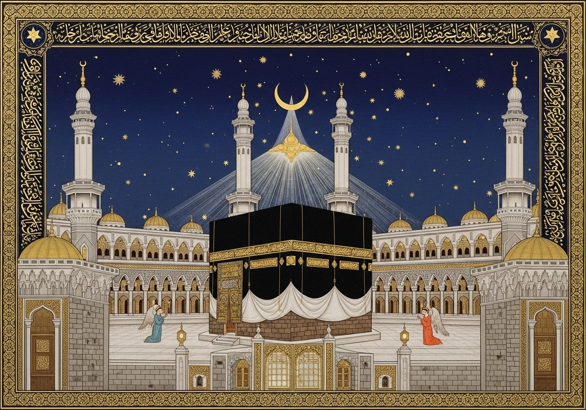
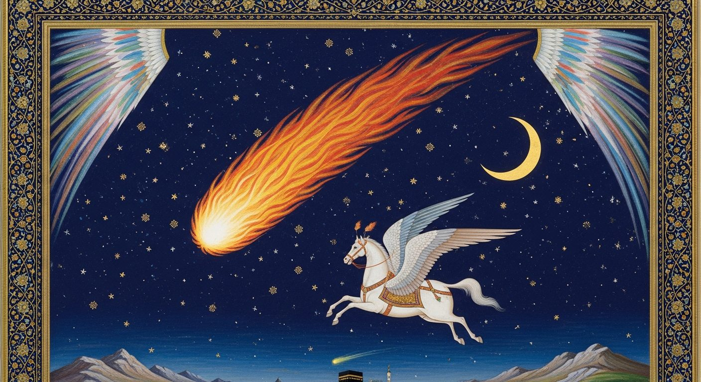

سُبْحَانَ الَّذِي أَسْرَىٰ بِعَبْدِهِ لَيْلًا مِّنَ الْمَسْجِدِ الْحَرَامِ إِلَى الْمَسْجِدِ الْأَقْصَى الَّذِي بَارَكْنَا حَوْلَهُ لِنُرِيَهُ مِنْ آيَاتِنَا ۚ إِنَّهُ هُوَ السَّمِيعُ الْبَصِيرُ
"Glory be to the One Who took His servant by night from the Sacred Mosque to the Farthest Mosque — whose surroundings We have blessed — so that We may show him some of Our signs. Indeed, He alone is the All-Hearing, All-Seeing." (Sūrat al-Isrāʾ · 17:1)
سُبْحَانَ · Subḥāna
Glory — the Qurʾān opens the verse not with history but with praise, marking the journey as an act of divine transcendence before any detail is given.
لَيْلًا · Laylan
By night — the indefinite noun signals a part of the night only. The entire journey, there and back, fit inside a single night's portion.
عَبْدِهِ · ʿAbdihi
His servant — the word ʿabd is the highest title in this context, used to confirm the Prophet's physical, bodily presence during the journey.
I. The Divine Command — Who Ordered the Journey?
The journey was not requested, proposed, or planned by any human or angel. The Qurʾān makes the initiator clear in the first word: Subḥāna alladhī asrā — "Glory be to the One Who caused to travel." Allah initiated, commanded, and executed this miracle directly. The verb asrā (to cause to journey by night) is causative — Allah is the sole cause.
The year was the 11th year of prophethood — approximately 620–621 CE — and it had been the most devastating year of the Prophet's ﷺ life. The scholars call it ʿĀm al-Ḥuzn, the Year of Sorrow. His beloved wife Khadījah RA — the first believer — had died. His uncle Abū Ṭālib, his protector against the Quraysh, had died within weeks of her. The people of Ṭāʾif had chased him from their city with stone-throwers, children mocking him in the streets.
The Isrāʾ wal-Miʿrāj was Allah's answer to that grief. Not a consolation — a revelation. Not words of comfort — a journey to the Divine Presence itself. The One Who had seen every stone that hit him, every insult, every loss, said: Come. Let Me show you My signs.
Year
11th Year of Prophethood · ~621 CE
Duration
Part of a single night (Qurʾān 17:1)
Context
Year of Sorrow — ʿĀm al-Ḥuzn
Scholars on Date
Most cite Rajab 27 · 17 Ramaḍān (minority)

Al-Masjid al-Ḥarām — the starting point · Ottoman miniature tradition.
II. The Preparation — Jibrīl's Arrival
The Prophet ﷺ was resting in the Ḥijr — the semi-circular enclosure beside the Kaʿbah — when the Angel Jibrīl descended. He came with Mīkāʾīl. Together they carried the Prophet to the Well of Zamzam and performed the Shaqq al-Ṣadr — the Opening of the Chest. This had happened once before, in the Prophet's childhood; now it was repeated before the greatest journey in human history.
Step 1
The Chest Opened
Jibrīl opened the Prophet's chest from throat to belly — without pain, without wound (Saḥīḥ Muslim 162).
Step 2
The Heart Removed
The Prophet's heart was taken out and placed in a golden tray, gleaming with light.
Step 3
Washed with Zamzam
The heart was washed clean — purified, the scholars say, of every trace of doubt, forgetfulness, and heedlessness.
Step 4
The Two Bowls
Two golden bowls were brought — one of wisdom (ḥikmah), one of faith (īmān). Both were poured into the heart, which was returned and the chest sealed.

The Isrāʾ — Mecca to Jerusalem. Safavid miniature tradition · the Prophet ﷺ rides Buraq through the celestial night, accompanied by Jibrīl.
III. The Five Stations of the Night
Jibrīl did not simply fly from Mecca to Jerusalem in a straight line. At four points along the route he halted Buraq, turned to the Prophet ﷺ, and said: "Dismount and pray." Each stop was a monument of prophetic history. Each prayer was a consecration. The route was not geographical — it was theological.
01 · Prophecy Revealed
Yathrib — The Future Madinah
يَثْرِب / طَيْبَة
The Prophet ﷺ prayed two rakʿahs here. Jibrīl then asked: "Do you know where you prayed? You prayed in Ṭaybah — which will be the place of your emigration." He had no plan yet to emigrate; within two years he would leave Mecca forever for this very soil. (Sunan al-Nasāʾī 450)
02
Madyan — Land of Mūsā & Shuʿayb
مَدْيَن
He prayed at the tree of Mūsā — where Moses had rested as a destitute fugitive after fleeing Egypt, crying: "My Lord, I am in need of whatever good You send down to me." (Qurʾān 28:24) Moses' helplessness and Muhammad's elevation mirror each other across the centuries.
03
Mount Sinai — Ṭūr Sīnāʾ
طُور سِيْنَاء
He prayed where Allah had spoken directly to Mūsā and the Torah was revealed. The Qurʾān swears an oath by this mountain (95:1–2). To pray here was to stand at the axis of the Abrahamic covenant — at the very peak where revelation had once thundered down.
04
Bayt Laḥm — Bethlehem
بَيْتُ لَحْم
The final stop before Jerusalem — the birthplace of Prophet ʿĪsā ﷺ (Jesus). The ground of the Nativity, consecrated now by the footstep and prayer of the Last Prophet.
05 · The Summit
Al-Masjid al-Aqṣā — Jerusalem
الْمَسْجِدُ الأَقْصَى
Buraq was tethered at the ancient ring all prophets' mounts had used. Jibrīl offered two vessels — milk and wine; the Prophet ﷺ chose the milk, the fiṭra. Then he led every prophet from Ādam to ʿĪsā in prayer. (Qurʾān 17:1 · Saḥīḥ Muslim · Saḥīḥ al-Bukhārī)
IV. Imam of All the Prophets
When the Prophet ﷺ entered al-Masjid al-Aqṣā, he found it filled with luminous figures — the assembled prophets of all history, from Ādam ﷺ to ʿĪsā ﷺ. This is narrated explicitly in Saḥīḥ Muslim (172). Then the iqāmah was called, and every prophet — Ibrāhīm the friend of Allah, Mūsā who spoke with Allah, ʿĪsā created without a father — stood in rows. And Muḥammad ﷺ stepped forward to lead them. Imām al-Anbiyāʾ — the Imam of the Prophets.
"Two vessels were brought to me — one of wine and one of milk. I chose the milk. Gabriel said: 'You have chosen the fiṭra (the natural disposition). Had you chosen wine, your community would have gone astray.'"
— Saḥīḥ al-Bukhārī · Saḥīḥ Muslim
The Isrāʾ — What It Reveals. The Night Journey was not a shortcut to Jerusalem. It was a theological curriculum — four stops, four prophetic legacies, four prayers on four sacred grounds — before the summit at al-Aqṣā. Every footstep said: the one who prays here continues the work of all who came before. Then the Miʿrāj began.